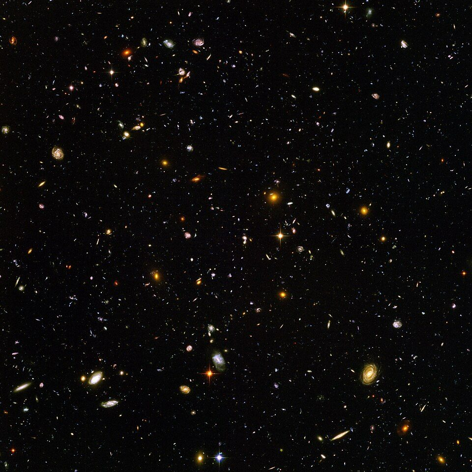

Universe · 5 articles
Galaxies
The Milky Way, Andromeda and the trillions of galaxies in the universe: their shapes, their collisions and the great structures they build.
A galaxy is an immense city of stars, gas, dust and dark matter held together by gravity. Until a hundred years ago the Milky Way was thought to be the whole universe. Today we know it is just one of perhaps two trillion galaxies.
 The Milky WayOur galaxy: a barred spiral 100,000 light years across with hundreds of billions of stars and a black hole at its centre.
The Milky WayOur galaxy: a barred spiral 100,000 light years across with hundreds of billions of stars and a black hole at its centre. Andromeda and the Local GroupOur neighbour Andromeda, the Magellanic Clouds and the more than 80 galaxies of the Local Group. And a collision foretold.
Andromeda and the Local GroupOur neighbour Andromeda, the Magellanic Clouds and the more than 80 galaxies of the Local Group. And a collision foretold. Types of galaxiesSpiral, elliptical, lenticular and irregular: Hubble's classification and what a galaxy's shape tells us.
Types of galaxiesSpiral, elliptical, lenticular and irregular: Hubble's classification and what a galaxy's shape tells us. Galaxy collisionsWhen two galaxies meet, their stars hardly ever collide, but the gas bursts into millions of new stars.
Galaxy collisionsWhen two galaxies meet, their stars hardly ever collide, but the gas bursts into millions of new stars.
Clusters and the cosmic webGalaxies gather into clusters, superclusters and filaments that form a gigantic web with huge voids in between.